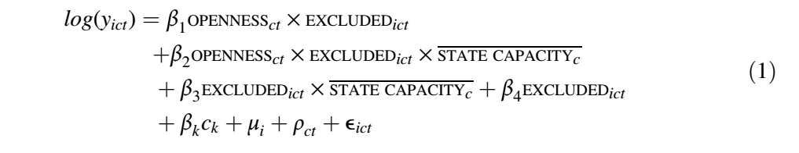
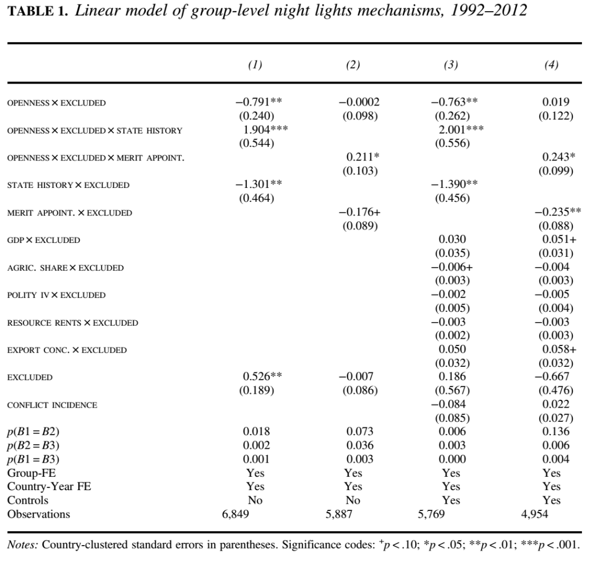
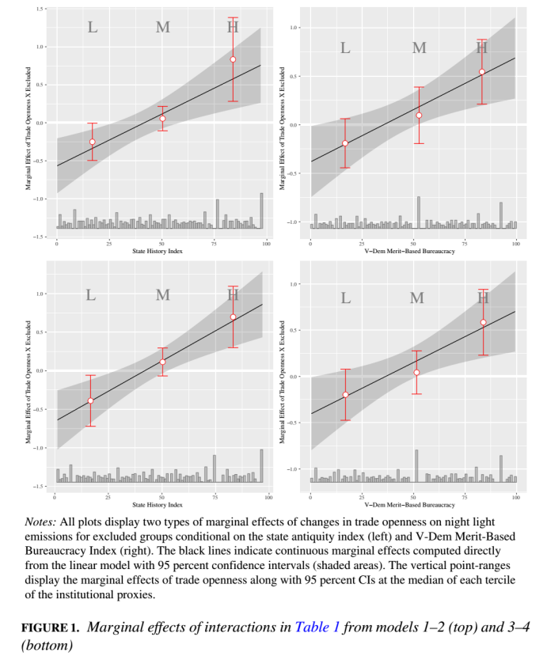
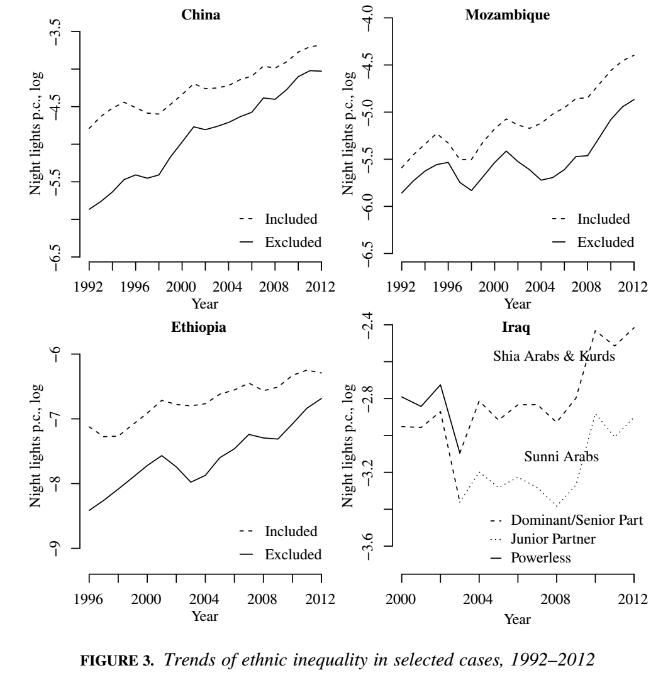

收录于合集 #理论研究 96个

作品简介
作者： Nils-Christian Bormann，埃塞克斯大学政府学院高级讲师，主要研究方向为民族政治与内战。Yannick I. Pengl，苏黎世联邦理工学院国际冲突研究小组博士后研究员，主要研究方向为比较政治、政治经济学与国际关系。Lars-Erik Cederman，苏黎世联邦理工学院国际冲突研究小组教授，主要研究方向为计算机建模、国际关系理论、民族主义与历史社会学。Nils B. Weidmann，康斯坦茨大学政治科学教授，主要研究方向为暴力冲突。
编译： 阮辰阳（复旦大学国际政治系）
来源： Bormann, N.-C., Pengl, Y. I., Cederman, L.-E., & Weidmann, N. B. (2021). Globalization, Institutions, and Ethnic Inequality. International Organization , 75(3), 665-697.
归档： 《国际关系前沿》2021年第9期，总第36期。
内容提要
本文主要考查经济全球化与国内制度在塑造民族间不平等方面的交互作用。首先，研究数据表明，政治边缘化集体与掌权集体之间的差距随着经济全球化的稳步增长而缩小。其次，作者依据定量分析与四个案例进一步得出：在制度化薄弱的国家，贸易开放度增加所带来的经济福利只能惠及政坛内部人士及其同民族团体，而只有在制度化程度高的国家中，自由贸易的经济福利才能惠及政坛外部人士及其所属的民族团体。
文章导读
民族不平等近年来在学界得到日益热烈的讨论，其中的疑难问题在于何种因素推动了民族不平等。一些文献指出，民族不平等是由于以民族为界的政治偏袒所致，具体而言，具有权势的团体与精英会将国家资源输送给他们的选民。大部分此类文献假定政坛内外团体间的不平等是恒定不变的，甚至将其称为“政治公理”，而本文意在挑战这一假定，考察政坛内外团体间经济不平等是否会发生动态变化，并探究发生变化的原因。
本文作者认为，民族间经济不平等程度的变化是两个机制交互作用的结果。第一个机制是经济全球化，经济全球化程度的提升给绝大部分国家带来福利，掌控政府的精英可以决定这些福利的分配方式——选择将福利拨给政治边缘化的民族团体或当前掌权的民族团体。策略的选择取决于第二个机制，即国内制度的强度。强大的国家制度具有广泛进行贸易福利分配的基础性权力（infrastructural power）以及防止精英俘获与庇护的精英官僚制（meritocratic bureaucracy），在这两个因素的作用下，政治强权团体使国家资源偏向其亲属的可能性得以下降。
因此， 国内制度强度作为中介变量可以用于解释经济全球化背景下贸易开放的分配效应对政坛内外团体间不平等程度的影响 。 当制度薄弱且易造成民族统治时，经济开放度的增加不会改变先前民族偏袒的情况，即政坛外团体被剥夺从贸易中获利的可能性，政坛内外团体间不平等程度不会降低。相反，强大的国家机制能够使政坛外团体从经济开放中获利，因而使这些团体得以赶上所在国家生产力的平均水平。
为证实上述论点，作者首先将从理论上论述国家的基础性权力与精英官僚制如何影响经济全球化在民族团体间的分配。其次，作者采用夜间灯光遥感衡量1992至2012年间民族团体的经济轨迹，并依照上述数据对政坛内外团体不平等趋势及其受到经济全球化的影响进行回归分析。再次，作者用四个案例证实上述理论机制。最后，作者探讨了由国家驱动的经济一体化与民族团体间政治平等这二者之间的潜在张力。
01
民族不平等不同趋势的解释机制
作者认为， 国家制度强度中的基础性权力与精英官僚制会影响贸易自由化对多民族社会的分配效应。
1.基础性权力
基础性权力指国家将其基本功能辐射到其所有领土与人口的能力。基础性权力薄弱表现为资源缺乏、物流挑战以及来自领土边缘地方强人与地方集体的规避和抵制。在这种情况下，国家精英将陷入米格戴尔所谓的“统治者困境”（the ruler’s dilemma）中：由于精英对于政治边缘化群体的控制程度与合法性比较弱，任何发展边缘领土与人口的努力都可能导致新的权力中心出现，从而威胁中央政府精英的政治生存。因此，国家官员不愿在边缘地区和团体中有效地进行再分配或大规模发展项目的投资，经济福利也就无法惠及未被政治代表的民族团体。相反，在基础性权力强大的情况下，国家及其官僚可以施展权威，通过人口普查、税收、公共产品供给以及财产权的实施等方式帮助地方民族团体从贸易中获利。综上可得出以下假设：
假设一：在拥有高水平基础性权力的国家中，贸易开放度的增加会减小政坛内外团体间的收入差距。
2.精英官僚制
依据韦伯“法理型权威”理想类型的有关论述，精英官僚制意味着由官僚按照一定规则执掌国家制度，这些官僚不仅会受到如独立司法、竞争性就业等正式的制度性限制，而且受到绩效原则、职业要求与公正准则等非正式规范的影响。因此，精英官僚制可以抑制官僚通过提取租金损害无政治权力的团体的动机。同时，精英官僚制鼓励官僚在少数民族区域进行大规模发展项目的投资，从而缓解政坛内外民族团体的经济不平等，并且给予全球化之下的利益受损者以一定补偿。由此，我们可以得出第二个假设：
假设二：对于实行精英官僚制的国家，贸易开放度的增加会减小政坛内外团体间的收入差距。
02
回归分析
1.变量说明
因变量方面，作者引用了GeoEPR数据库中表达民族聚居区信息的夜间灯光排放数据，以此表征120个国家共398个民族团体的经济发展程度。
自变量方面，作者用 OPENNESS （贸易开放度，即一国进出口总额占年度GDP之比）描述经济全球化程度。
中介变量方面，首先，作者用一个虚拟变量 EXCLUDED 来表示单个民族团体的政治状态，即该团体代表是否在某给定年份被排除在中央政府之外。其次，作者用 STATE CAPACITY 表征某国制度强度，并进一步用 STATE HISTORY 与 MERIT-BASED APPOINTMENTS 来分别表征制度强度中的基础性权力与精英官僚制。具体而言，一方面，作者使用STATE HISTORY表征一国历年中央集权程度；另一方面，作者使用MERIT- BASED APPOINTMENT表征“行政机关中的雇佣、解雇与晋升基于绩效而非私人联系”的程度。
此外，作者选择了一系列重要的控制变量用以与政治排外和贸易开放度进行交互，这些控制变量包括GDP PER CAPITA、RESOURCE RENTS PER CAPITA、EXPORT CONCENTRATION、AGRICULTURAL SHARE OF GDP、民族团体的冲突发生率（CONFLICT INCIDENCE）与民族团体大小（GROUP SIZE）。
2.建模
本文建立的回归方程如下：

其中yict指c国民族团体i的聚居区在t时间的人均夜间灯光排放。
3.分析结果
作者首先得出的结论是， 1992至2012年全球政坛内外民族团体之间的经济不平等总体呈现明显下降的趋势。
表 1 1992-2012年民族团体夜间灯光排放的线性模型

表1考察了不同制度强度下一国贸易开放度的变化对该国政坛外民族团体的相对经济表现的影响，其中STATE CAPACITY在模型1与3中用STATE HISTORY代换，在模型2与4中用MERIT-BASED APPOINTMENT代换。由模型1与2可得，交互项OPENNESSEXCLUDEDSTATE CAPACITY均为正向显著，这表明 一国的制度强度越高，贸易开放度对该国政坛外民族团体夜间灯光排放的边际效应就越大 。 此外，固定效应项ρct表明该边际效应与同一国家政坛内民族团体的年均夜间灯光排放相关，因而只要一国政坛内民族团体的年均夜间灯光排放上升（即政坛内民族团体的经济表现提升）， 边际效应为正即意味着政坛内外民族团体经济不平等程度的降低 。 然而，这一边际效应何时为正且是否显著需要进一步分析。

图1 四个模型的边际效应
图1即表达了不同制度强度的百分位数下上述边际效应的大小。由图可知， 随着制度强度的增加 （无论是STATE HISTORY还是MERIT-BASED APPOINTMENTS的增加）， 边际效应由负变为正且显著 。这一结果表明： 当制度强度较低时，边际效应为负，贸易开放度的增加会加大政坛内外民族团体间的收入差距；而随着制度强度增大，当边际效应变为正时，贸易开放度的增加会减小政坛内外民族团体间的收入差距 （从而印证了上文中的假设一与假设二）。
03
案例分析
接着，作者结合具体国家验证图1得出的结论。

图2 1992-2012年四国民族不平等趋势
图2展示了四个国家历年民族不平等状况，已知中国和埃塞俄比亚的国家制度强度高，而伊拉克和莫桑比克的国家制度强度低。由上图可知，在四国贸易开放度增加的情况下，中国和埃塞俄比亚的政坛内外民族团体的发展差距减小，而伊拉克和莫桑比克的政坛内外民族团体的发展差距增大。从实际情况来看，中国和埃塞俄比亚都曾深度开展脱贫发展项目，并且无论民族团体的政治代表情况如何，两国均投入大量公共资源以提高这些团体的经济福利；而另一边，由于国家制度薄弱，伊拉克和莫桑比克的政府官员在将公共资金偏向同种族团体分配方面更不受限。
04
结论
尽管制度化程度高的国家有助于减轻政坛内外民族团体间经济不平等程度，现实而言这一转变过程并非没有弊端。具体来说，这些国家虽然有能力实施发展项目，项目本身可能没有达到民主、人权等标准。即使发展项目可以使没有政治代表性的民族团体在经济方面获益最大，这些团体由于被排斥在政坛之外，依然在政治上无法影响国家总体的发展路径。在最极端的情况下，在少数民族区域开展的发展项目可能触发中央与地方之间的武装冲突。
因此，制度化程度高并不能保证国家可以将经济全球化转变为政治和经济上的包容性发展。后续研究不仅需更加关注特定的发展项目及其在团体间不平等程度、总体繁荣度以及政治稳定性方面的后果，而且需通过更为细致的调查来研究特定经济政策改革对收入分配和民族间关系的影响。
译者评述
本研究选取贸易开放度为自变量，政坛内外团体间的收入差距为因变量，国家制度化程度为调节变量。实际上，在国际政治经济学领域，许多学者都将自由贸易作为自变量进行研究，以下试举三例。
1.罗戈夫斯基《商业与联盟：贸易如何影响国内政治联盟》
本书以自由贸易（贸易扩张）或贸易收缩为自变量，国内政治联盟为因变量，该国要素禀赋为中介变量展开研究。
本书作者以斯托尔帕- 萨缪尔森定理（SS定理）作为理论基石。SS定理描述国际贸易对收入分配的影响，定理主要内容为：当自由贸易加强时，某产品或产业密集使用的生产要素报酬提升，而稀缺生产要素的报酬下降。假设自由贸易的受益者会将自身的经济优势转化为政治优势从而给出有利于自身的制度改变，那么不同要素拥有者就贸易政策会形成不同阵营乃至影响该国的政治意识形态。例如，如果该国资本、土地要素充裕而劳动力要素稀缺，那么土地、资本所有者将支持自由贸易，而劳工将争取贸易保护；再如，如果该国劳动力要素充裕而资本、土地要素稀缺，那么劳工将支持自由贸易，而资本、土地所有者将争取贸易保护，该国的政治意识形态便倾向于社会主义。
2.希斯考克斯《国际贸易与政治冲突——贸易、联盟与要素流动程度》
本书同样以自由贸易为自变量，一国社会分化维度（按阶级或部门分化）为因变量，行业间要素流动程度为中介变量展开研究。
作者同样以SS定理为基础，然而他强调，定理适用的前提是生产要素能够在一国不同产业间充分流动，因为只有要素的充分流动，自由贸易才对每种要素的全部所有者具有相同影响，而不论这些所有者来自哪一个行业。而一国生产要素在不同产业间无法流动的情况适用李嘉图- 维纳定理，该定理认为生产要素收益与它们所处的行业紧密相关：自由贸易会使出口行业的特定要素的真实收益增多，进口竞争行业的特定要素的真实收益减少。
因此，依据以上理论分析，作者得到的最终结论是：在要素流动性高的情况下，自由贸易更倾向于导致社会按照阶级分化，每个阶级代表其所掌握的生产要素，由此形成以阶级为基础的政治联盟，以政党与社会组织为典型；而在要素流动性低的情况下，自由贸易更倾向于导致社会按照部门分化而形成以行业为基础的政治联盟，行业集团游说的现象更为常见。
3.田野《国际贸易与政体变迁：民主与威权的贸易起源》
本书仍然以自由贸易为自变量，一国政体变化（民主转型或维权巩固）为因变量，要素禀赋或初始权威类型为条件变量，由此得出的结论是：
第一，当一国劳动力要素充裕而自然资源要素稀缺时，自由贸易会使工人等劳动力要素所有者的收入增加，工人阶级的大规模动员将促进民主转型；而当一国自然资源要素充裕而劳动力要素稀缺时，自由贸易会使地主、矿主等自然资源要素所有者收入增加，由于这类人多为反民主的既得利益者，自由贸易最终将导致该国威权巩固。
第二，在不同的初始威权类型下，自由贸易对政体变迁会产生不同影响。具体而言，当初始的威权类型为军人政权时，自由贸易所带来的经济发展和人均收入的增长会使威权政体面对不断扩大的政治参与需求，最终往往会促进民主转型；而当初始的威权类型为一党制时，虽然国家也面临民众的政治参与需求，但由于一党制相较于军人政权在控制社会与吸纳政治参与方面具有制度优势，一党制统治将更加稳定，因而即使面对自由贸易威权政体也得以保持甚至巩固。
参考文献
[1] 罗纳德·罗戈夫斯基 著，杨毅 译：《商业与联盟：贸易如何影响国内政治联盟》，上海：上海人民出版社2012年版。
[2] 迈克尔·J·希斯考克斯 著，于扬杰 译：《国际贸易与政治冲突——贸易、联盟与要素流动程度》，北京：中国人民大学出版社2005年版。
[3] 田野 等著：《国际贸易与政体变迁：民主与威权的贸易起源》，北京：中国社会科学出版社2019年版。
词汇积累
infrastructural power 基础性权力
meritocratic bureaucracy 精英官僚制
责编 | 阮辰阳 姚寰宇
排版 | 邱意雯 彭雯昕
文章观点不代表本平台观点，本平台评译分享的文章均出于专业学习之用, 不以任何盈利为目的，内容主要呈现对原文的介绍，原文内容请通过各高校购买的数据库自行下载。

国政学人
支持学术公益与知识传播
微信扫一扫赞赏作者 __赞赏
已喜欢，对作者说句悄悄话
取消 __
发送给作者
发送
最多40字，当前共字
上一页 1/3 下一页
长按二维码向我转账
支持学术公益与知识传播
受苹果公司新规定影响，微信 iOS 版的赞赏功能被关闭，可通过二维码转账支持公众号。